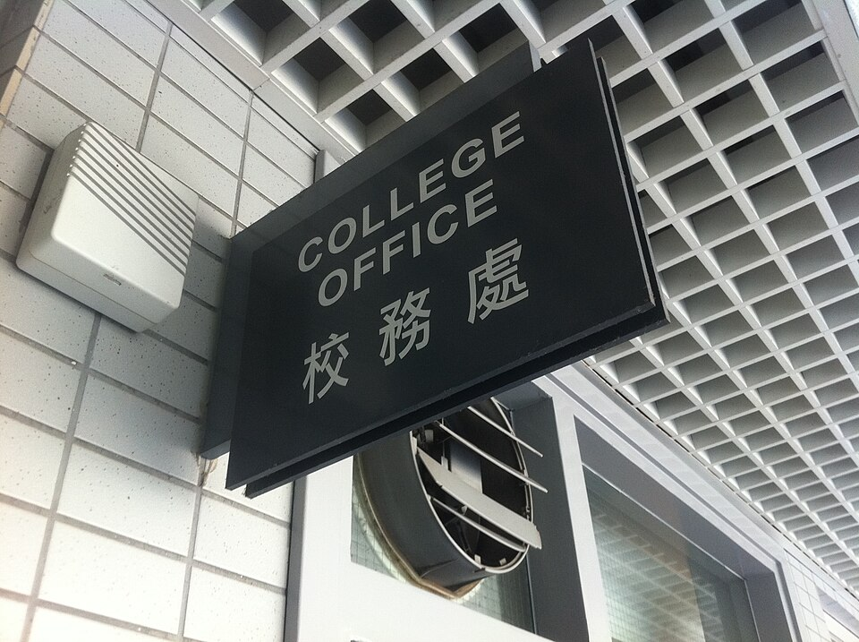

학교 행정실 안내 표지판 (이미지) · 사진: Kathy Luk / Wikimedia Commons, CC BY-SA 3.0
국제학교 과목 신청(Course Selection) — 봄에 낸 종이 한 장이 내년 시간표를 정합니다
1. 과목 신청이란 무엇인가
영어로는 학교마다 Course Selection, Subject Selection, Option Choices 같은 이름으로 부릅니다. 하는 일은 같습니다. 다음 학년에 들을 과목을 미리 골라 학교에 제출하는 것입니다.
많은 학교가 다음 학년이 시작되기 몇 달 전, 즉 학년 중반에서 후반 사이에 이 절차를 진행합니다. 8월에 새 학년이 시작하는 학교라면 대체로 그 전 해 봄 무렵에 안내문이 나오는 경우가 많습니다. 다만 정확한 시기와 절차는 학교마다 다르고 해마다 조금씩 바뀝니다. 이 글의 일정은 방향을 잡기 위한 것이고, 기준은 학교가 보내 주는 올해 안내문입니다.
중요한 건 학교가 이 신청서로 무엇을 하느냐입니다. 학교는 모인 신청을 보고 어떤 과목을 몇 반 열지, 어느 교사에게 맡길지, 각 반을 몇 교시에 넣을지를 정합니다. 즉 신청서가 먼저이고 시간표가 나중입니다. 이 순서를 이해하시면 뒤에 나오는 이야기가 전부 자연스럽게 설명됩니다.
2. 한국 학교와 무엇이 다른가
| 항목 | 한국 학교에서 익숙한 방식 | 국제학교에서 자주 보는 방식 |
|---|---|---|
| 언제 정하나 | 학년이 시작될 무렵 | 몇 달 전 — 전 학년 중에 이미 끝난다 |
| 누가 정하나 | 학교가 짠 틀이 대체로 정해져 있다 | 학생이 골라서 낸다 — 조합이 학생마다 다르다 |
| 넣고 싶으면 넣나 | 대체로 가능 | 선수과목 성적 조건이 걸린 과목이 있다 |
| 개설 여부 | 거의 다 열린다 | 신청 인원이 적으면 안 열릴 수 있다 |
| 시간표 충돌 | 거의 생각할 일이 없다 | 같은 시간대(블록)에 겹치면 둘 다 못 듣는다 |
| 나중에 바꾸기 | 비교적 유연한 편 | 기간과 조건이 정해져 있다 — 못 바꾸는 경우도 많다 |
※ 위 내용은 여러 국제학교에서 공통으로 보이는 경향을 정리한 것입니다. 학교·학년마다 다르므로 우리 아이 학교의 실제 규정은 안내문이나 담당 교사에게 확인하세요.
표에서 가장 자주 사고가 나는 줄이 네 번째와 다섯 번째입니다. 한국 학부모님 입장에서는 "신청했는데 과목이 안 열린다"거나 "자리는 있는데 시간이 겹쳐서 못 듣는다"는 상황 자체가 낯섭니다. 그런데 국제학교에서는 드물지 않습니다.
3. 커리큘럼마다 신청서의 모양이 다릅니다
· IB 디플로마 — 정해진 과목 그룹에서 하나씩 골라 6과목을 채우고, 그중 일부를 HL(상위 수준), 나머지를 SL(표준 수준)로 정합니다. 여기에 소논문·지식이론·창의체험활동이 따라붙습니다. HL을 무엇으로 올리느냐가 대학 학과 지원 자격과 직접 연결되기 때문에, 이 신청서는 사실상 진로 결정서에 가깝습니다. → IB DP 점수 완전정복
· 영국식(IGCSE·A-Level) — IGCSE 단계에서 필수 과목 외에 선택 과목을 고르고, 그 결과가 A-Level에서 고를 수 있는 과목을 좁힙니다. A-Level은 보통 3~4과목으로 줄이기 때문에 버리는 결정이 함께 일어납니다. → IGCSE 과목 선택 · A-Level 과목 선택
· 미국식(AP 포함) — 졸업에 필요한 이수 요건을 채우면서 남는 자리에 선택 과목과 AP를 넣습니다. AP는 선수과목 조건이나 교사 추천이 붙는 경우가 있어, 넣고 싶다고 다 넣어지지 않습니다. → AP 과목 선택
· 제2외국어 — 어느 체계든 언어 과목을 어느 수준으로 시작하느냐가 신청서에서 갈립니다. 한 번 정하면 몇 년을 끌고 가는 결정이라 신중하셔야 합니다. → 중국어 · 일본어 · 프랑스어 · 스페인어
4. 한국 가정이 놓치는 다섯 지점
· ① 선수과목 성적 조건을 늦게 압니다. 상위 과목에는 "직전 학년 해당 과목에서 일정 성적 이상" 같은 조건이 붙는 경우가 많습니다. 신청서를 받고서야 이 조건을 알면 이미 성적은 끝나 있습니다. 이 조건은 안내문이 나오기 몇 달 전부터 확인해 두셔야 손쓸 시간이 생깁니다.
· ② 시간표 블록을 안 봅니다. 많은 학교가 과목을 시간대별 묶음으로 운영합니다. 같은 묶음 안의 두 과목은 동시에 들을 수 없습니다. 아이가 원하는 조합이 애초에 불가능한 조합일 수 있습니다.
· ③ 2지망을 아무거나 씁니다. 신청서에는 보통 대체 과목을 적는 칸이 있습니다. 1지망이 안 열리거나 자리가 없으면 거기 적은 과목이 그대로 확정됩니다. 그런데 많은 아이가 여기를 "일단 아무거나" 채웁니다. 2지망도 1지망만큼 진지하게 정하셔야 합니다.
· ④ 인원이 적은 과목의 위험을 모릅니다. 신청자가 적으면 그 과목은 안 열릴 수 있습니다. 아이가 그 과목에 진로를 걸고 있다면, 안 열렸을 때의 계획을 미리 세워 두셔야 합니다.
· ⑤ 부모 확인 서명과 마감을 놓칩니다. 신청서에 학부모 확인이 필요한 학교가 많습니다. 아이 이메일이나 학습 플랫폼으로만 안내가 가서 부모님이 못 보고 지나가는 경우가 실제로 자주 있습니다. 마감이 지나면 학교가 임의로 배정하게 되는 상황이 생길 수 있습니다.
5. 집에서 할 일 — 4단계
1단계 — 학사 일정에서 신청 시기를 먼저 찾습니다
학기 초에 학사 일정을 받으시면 과목 신청 관련 일정부터 표시하세요. 안내문 배포일, 설명회, 상담 기간, 마감일 네 가지입니다. 이 표시 하나로 준비할 시간이 몇 달 생깁니다. 학교마다 시기가 다르니 직접 확인하셔야 합니다.
2단계 — 넣고 싶은 과목의 조건을 미리 묻습니다
안내문을 기다리지 마시고 담당 교사나 진학 카운슬러에게 미리 물으세요. 질문은 셋이면 충분합니다. "이 과목에 선수과목이나 성적 조건이 있나요?" "지금 성적으로 그 조건을 넘습니까?" "넘지 못한다면 남은 기간에 무엇을 하면 됩니까?" 조건이 아슬아슬하다면 신청서보다 그 과목 성적을 올리는 일이 먼저입니다.
3단계 — 종이에 조합을 그려 봅니다
머릿속으로 하지 마시고 적으세요. 과목 이름 / 왜 넣는가 / 조건을 넘는가 / 안 되면 대신 무엇. 네 칸입니다. 마지막 칸을 채우는 과정이 곧 2지망을 진지하게 정하는 일이 됩니다. 시간표 묶음 안내가 있다면 그것도 옆에 놓고 겹치는 조합이 아닌지 확인하세요.
4단계 — 확정되면 방학에 앞부분을 봅니다
신청이 끝났다고 할 일이 끝난 게 아닙니다. 다음 학년에 새로 시작하는 과목이 있다면 방학 동안 앞부분만이라도 봐 두세요. 특히 영어로 된 수학 용어와 그 과목의 글쓰기 형식은 미리 익혀 두면 첫 학기가 완전히 달라집니다.
6. 과외는 언제 붙이면 좋은가
마감 직전에 찾으시면 할 수 있는 일이 별로 없습니다. 효과가 큰 지점은 둘입니다.
· 안내문이 나온 직후 — 아이가 넣고 싶은 과목의 조건을 넘는지 함께 확인하고, 아슬아슬하면 남은 기간에 그 과목 성적을 끌어올리는 쪽으로 수업을 씁니다. 신청 가능 여부 자체가 바뀌는 구간입니다.
· 확정 후 방학 — 새 과목의 앞부분, 특히 용어와 형식을 미리 봅니다. 새 학년 첫 두 달의 성적이 한 해 전체의 분위기를 만들기 때문에, 여기에 쓰는 시간이 가장 값이 쌉니다. 영어 쪽은 영어 공부법, 수학 쪽은 알지브라 공부법과 이어집니다.
정리
국제학교의 과목 신청은 다음 학년 시간표를 학생이 직접 만드는 절차입니다. 학교는 이 신청서를 모아 반과 교사와 시간표를 짜기 때문에, 한 번 확정되면 되돌리기 어렵습니다. 집에서 하실 일은 셋으로 줄일 수 있습니다. 학사 일정에서 신청 시기를 먼저 찾기, 넣고 싶은 과목의 조건을 몇 달 전에 묻기, 2지망까지 진지하게 정하기. 특히 선수과목 성적 조건은 알게 된 시점이 늦으면 손쓸 방법이 없으니, 이번 학기 안에 한 번 확인해 두세요. 30분 무료 상담으로 아이 학년에 맞는 과목 조합부터 함께 정리해 보세요.